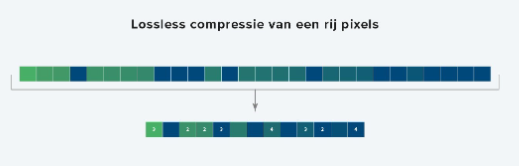

Scroll naar beneden voor: 'Compressie'
Kleurmodellen
Ontdek kleurmodellen! Pixels vormen de bouwstenen van digitale beelden. RGB (rood, groen, blauw) geeft leven aan schermen, terwijl YMC (geel, magenta, cyaan) perfect is voor drukwerk. Duik in de wereld van kleuren en maak beelden sprankelend!
Binair stelsel
Ontdek het binaire stelsel! Met slechts 0's en 1's vormt het de basis van digitale technologie. ASCII zet deze cijfers om naar letters, zodat computers met ons kunnen communiceren. Klik hier en ontdek hoe dit systeem onze wereld verandert!
Compressie
Verken het geheim van compressie! Of het nu gaat om afbeeldingen of geluidsfragmenten, compressie verkleint bestanden zonder veel kwaliteit te verliezen. Dit bespaart ruimte en versnelt downloads. Klik hier en ontdek hoe compressie de digitale wereld efficiënter maakt!
Bitmap- en vectorafbeeldingen
Ontdek bitmap- en vectorafbeeldingen! Bitmapafbeeldingen bestaan uit pixels en zijn ideaal voor foto's, terwijl vectorafbeeldingen werken met lijnen en vormen, perfect voor logo's en illustraties. Elk type heeft zijn eigen kracht. Klik hier en leer hoe ze de digitale wereld vormen!
Andere Sites
Genoeg gehad van onze eigen site? Check ook sites uit mijn klas! Dezelfde onderwerpen maar ook dezelfde fun. Klik hier beneden om meer dan 5 sites te ontdekken!
Over Mij
De homepagina van deze site, dé plek waar je van alles en nog wat over mij te weten komt. Ontdek waar ik werk, waar ik op school zit en wat er zo uniek aan mij is.
Compressie
Er zijn twee verschillende bestandscompressie:
Compressie bij afbeeldingen en video
Bij lossy compression wordt de oude info uit het bestand aangepast en verwijderd. Stel je voor je hebt een groen grasveld, met wel 100 verschillende groene tinten. Door minder verschillende tinten te laten voorkomen, verklein je de ruimte die de afbeelding inneemt, De kwaliteit wordt wel minder.
je hebt ook lossless compressie, de originele kwaliteit wordt hierbij niet beinvloed. Als je 4 dezelfde pixels naast elkaar hebt, is dit(10, 10, 10, 10). Met lossless compressie wordt dit (4,10)

Het kan altijd weer worden teruggezet, dat kan niet bij lossy compressie. Lossy levert kleinere bestanden op.
Compressie bij geluidsfragmenten
Een bekende compressietechniek voor muziek is mp3, dit is een lossy compressi-methode. Het mensenlijk gehoor kan tonen tot 20kHz horen, dit verschilt per persoon. Bij mp3 worden tonen die hoger dan 16 kHz zijn weggelaten als er veel ander geluid tegerlijkertijd te horen is.

Bij kwaliteit van muziek is sample rate van belang, hoeveel bits je met deze sample rate kan worden opgeslagen is ook belangrijk. Deze twee vermenigvuldigen vormt de bitrate, uitgedrukt in kilobits per seconde (kbps).